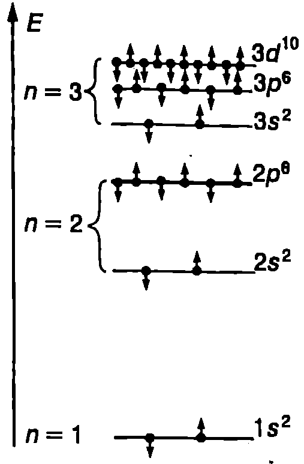
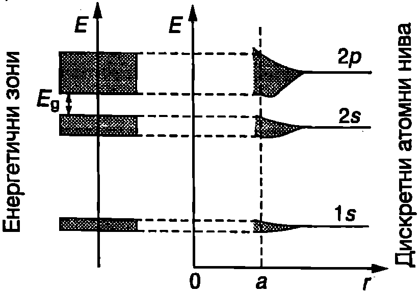
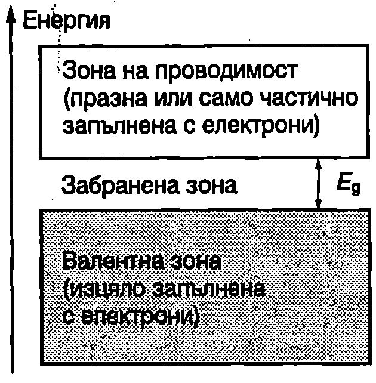
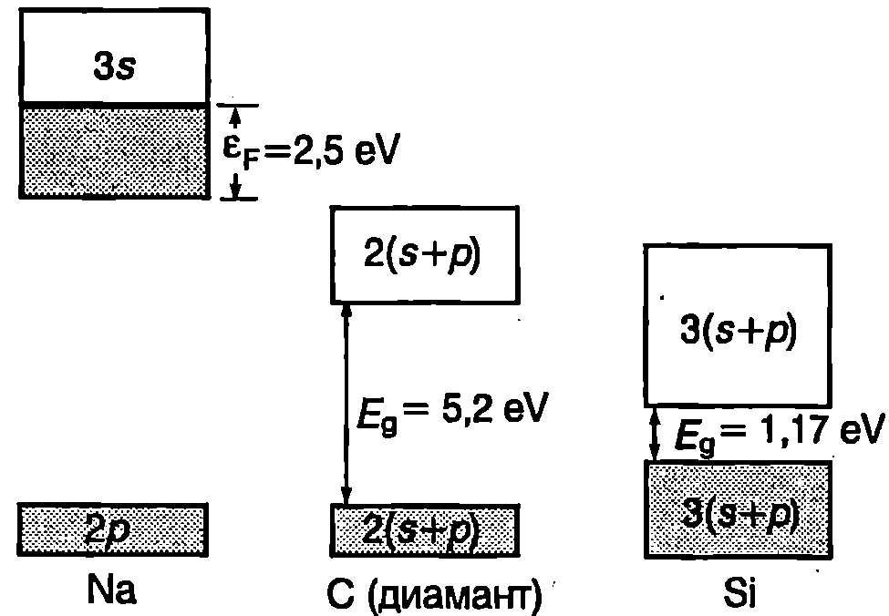

Специфичното съпротивление на чистите метали при ниски температури е от порядъка на , докато при някои диелектрици то достига . Изключително широкият диапазон на изменение на съпротивлението не може да се обясни с модела на свободните електрони, който разгледахме. Този модел не дава отговор на въпроса защо някои кристали са изолатори, други са отлични проводници на електричен ток, а на трети електричните свойства зависят силно от температурата (полупроводници).
Отговор на тези въпроси дава зонната теория на твърдото тяло. Ще разгледаме качествено само основните идеи и резултати на тази квантова теория и ще проследим измененията, които настъпват в енергетичния спектър на електроните, когато отделните атоми се обединят в кристал.
Енергетични нива на електроните в атома
Както е известно от училищните курсове по физика и химия, състоянието на електроните в атома се определя от четири квантови числа: главно квантово число , орбитално число , магнитно число и спиново число . Орбиталното квантово число може да взема стойности , т.е. на брой различни стойности. Магнитното квантово число приема различни стойности: . Спиновото квантово число на електроните може да има само две стойности: или .
Състоянията, за които орбиталното квантово число е е прието да се означават с буквата и да се наричат -състояния независимо от стойностите на останалите квантови числа. Състоянията с се наричат -състояния, с — -състояния, — -състояния. Електроните, които се намират в тях, се наричат съответно -, -, - или -електрони.
В изолирания атом енергията на електроните се определя само от главното квантово число и от орбиталното квантово число е. На Фиг. \ref{fig:55.1} схематично е показано запълването с електрони на нивата с главни квантови числа и 3. В -състоянията съгласно с принципа на Паули могат да се намират само по два електрона с противоположни спинове. В -състоянията електроните се различават не само по спина, но и по магнитното квантово число, което може да има три различни стойности: и . Казва се, че -състоянията са трикратно изродени: на една и съща енергия отговарят три състояния с различно , във всяко от които се разполагат по два електрона. В общия случай степента на израждане e равна на броя на стойностите, които може да приема магнитното число : Максималният брой на електроните, запълващи -кратно изродено ниво, е

`Фиг. 55.1`
На Фиг. \ref{fig:55.1} е използван един от общоприетите начини за означаване на електронната конфигурация на атомите: първата цифра показва главното квантово число, буквата — орбиталното квантово число, а горният индекс над буквата — броя на електроните в даденото състояние.
**Разрешени и забранени енергетични зони **
В изолирания атом дискретните електронни състояния са следствие от взаимодействието на електроните с атомното ядро, както и между отделните електрони на атома. В кристалите, поради малките разстояния между атомите, възникват нови сили: сили на взаимодействие между ядрата, между електроните, принадлежащи на различни атоми, и между всички електрони и всички ядра на кристала. Тези взаимодействия не са в състояние изцяло да разрушат изходната електронна структура на атомите. Затова съществува сходство между електронната структура на отделните атоми и на кристалите. От друга страна, в резултат на изброените допълнителни взаимодействия се появяват нови ефекти, характерни за твърдите тела:
-
На всяко енергетично ниво от отделния атом в кристала съответства определен енергетичен интервал (зона) с много близо разположени едно до друго разрешени състояния (нива).
-
Поради малките разстояния между атомите в кристала електронните обвивки на съседните атоми, особено външните, частично се припокриват. Това означава, че електрон, намиращ се на дадено ниво, принадлежащо на един атом, може с определена вероятност да премине в също то ниво на съседен атом, а електронът от съседния атом да прескочи в друг атом и т.н. За такива преходи не е необходима Допълнителна енергия и електроните от различните атоми могат непрекъснато да разменят местата си, т.е. те вече не принадлежат на конкретен атом, а на кристала като цяло.
Как възникват енергетичните зони? Нека еднакви атома са разположени толкова далеч един от друг, че да не взаимодействат помежду си. Тогава на всяко дискретно ниво на отделния атом в разглеждания “кристал” ще съответстват нива с еднаква енергия, т.е. едно -кратно изродено ниво (или -кратно изродено, ако изходното ниво има -кратно израждане). Когато атомите се приближават един към друг, всеки от тях попада в нарастващото електрично поле на своите съседи, което води до снемане на израждането: нивата, които първоначално са имали еднаква енергия, се разцепват (Фиг. \ref{fig:55.2}). Разцепването се обяснява с това, че електроните от изроденото ниво взаимодействат по различен начин с допълнителното електрично поле на съседните атоми, т.е с периодичното кристално поле.

`Фиг. 55.2`
Следователно на дискретните нива в отделния атом в кристала съответстват енергетични зони с близо разположени енергетични нива. Разрешените зони са разделени от забранени зони: интервали от енергия, в които няма електронни състояния. Колкото по-външни са електроните, толкова по-силно е влиянието на периодичното кристално поле и разрешените зони са по-широки. Обратно, с увеличаване на енергията на електроните ширината на забранените зони намалява.
Пример 55.1
Оценете разликата в енергиите на две съседни нива в -зона с ширина eV на кристал с атома. \end{psexample}
Решение
Да приемем с приближение, че нивата са разположени на еднаква енергия едно от друго. Тогава разликата в енергиите на две съседни нива е eV. Това е толкова малка стойност, че разпределението на електроните по енергия в рамките на една зона може да се смята за непрекъснато, т.е. да не се отчита дискретната енергетична структура. Но фактът, че броят на състоянията в зоната, макар и много голям, е все пак краен, играе важна роля за свойствата на кристалите.
Валентна зона и зона на проводимост
Запълването на разрешените зони с електрони става по същия начин, както нивата в атомите: в съответствие с принципа на Паули на всяко ниво могат да се разполагат най-много два електрона. Тъй като броят на електроните в кристала е ограничен, запълнени се оказват само определен брой зони (разположени най-ниско по отношение на енергията им). Последната, изцяло запълнена с електрони зона, се нарича валентна зона (Фиг. \ref{fig:55.3}). Разположената над нея частично запълнена или с изцяло свободни нива разрешена зона, се нарича зона на проводимост. Валентната зона и зоната на проводимост са разделени от забранена зона с ширина .

`Фиг. 55.3`
Вътрешните зони (разрешени и забранени) почти не влияят на свойствата на твърдите тела и по-нататък няма да ги разглеждаме. Решаващо значение за свойствата на кристалите има зоната на проводимост. Когато тя е частично запълнена с електрони, кристалът има висока електропроводимост, типична за металите. Диелектрици и полупроводници са кристалите, в чиито зони на проводимост при температура К няма електрони.
**Метали **
Типични представители на кристалите с частично запълнена зона на проводимост са алкалните метали, които имат само по един електрон в най-външната си електронна обвивка. Например при натрия () последните, изцяло запълнени с електрони нива, са -нивата, от които се формира валентната зона. В -нивата се намира само по един електрон (вместо 2 електрона) и те образуват запълнена до половината зона на проводимост (Фиг. \ref{fig:55.4}).
Високата електропроводимост на металите се дължи на електроните от зоната на проводимост. Техните свойства се описват добре от модела на свободните електрони, който разгледахме. В зонната теория енергията на Ферми (за изроден електронен газ при температура 0 К) е равна на разстоянието (енергетично) от дъното на зоната на проводимост до най-високото запълнено с електрони ниво (Фиг. \ref{fig:55.4}).

`Фиг. 55.4`
**Диелектрици и полупроводници **
Типични представители на кристалите, в чиято зона на проводимост при температура 0 К няма електрони, са ковалентните кристали на елементите от IV група на периодичната система: диамантът C (), силицият Si () и германият Ge (). Характерно за тях е, че валентните - и -състояния не образуват самостоятелни зони. В кристала те се разцепват по такъв начин, че създават две смесени (хибридни) -зони. Четирите валентни електрона запълват изцяло долната (валентна) -зона, а в горната (проводима) -зона нивата остават свободни (Фиг. \ref{fig:55.4}).
Електроните от валентната зона, когато тя е запълнена изцяло с електрони, не участват в пренасянето на електричния заряд при протичане на ток. Действително, за да се ускорят от външно електрично поле, те трябва да получат допълнителна енергия, т.е. да преминат в по-високоенергетични състояния. Това обаче е невъзможно, защото всички нива в зоната са запълнени с електрони и такива преходи противоречат на принципа на Паули. Преходи в свободните нива от зоната на проводимост също са невъзможни, защото за тях е необходима голяма енергия-трябва да се преодолее забранената зона . Следователно кристалите с изцяло запълнена с електрони валентна зона и празна зона на проводимост при ниски температури са изолатори.
От гледна точка на зонната теория между диелектрици и полупроводници няма разлика това са кристали, в чиято зона на проводимост при 0 К няма електрони. Делението е условно и се основава на ширината на забранената зона . Към диелектриците се причисляват кристалите с големи (). Например за диаманта
При типичните полупроводници ширината на забранената зона е от порядъка (или по-малка) на 1 eV: за Si и за Ge при температура 0 К.
При чистите полупроводници са изолатори.